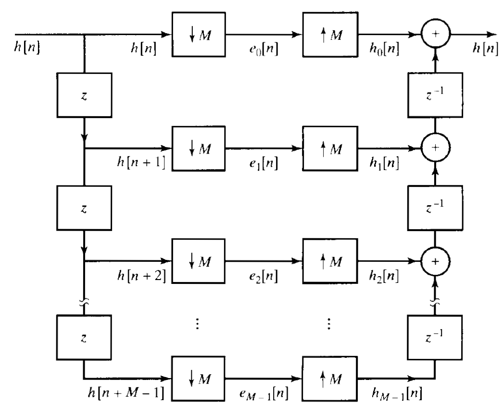

🔄 Polyphase Filters: Structure, Operation, and Advantages
Polyphase filters are an efficient solution in digital signal processing for tasks like decimation (downsampling) and interpolation (upsampling). Instead of processing and then discarding unnecessary data, polyphase filters restructure the filter into parallel components to compute only what's needed — saving significant computational effort.
🔧 Key Characteristics
| Feature | Description |
|---|---|
| Phase Decomposition | A filter is broken into multiple sub-filters (polyphase components) |
| Multiple Delay Lines | Multiple parallel paths process the input rather than one long delay line |
| Computational Efficiency | Avoids computing discarded samples in decimation or interpolation |
| Rate Conversion | Ideal for downsampling and upsampling operations |
| Frequency Demultiplexing | Can split signals into frequency subbands (e.g. channelizers) |
| Applications | Used in audio, telecom, SDRs, and multirate systems |
⚙️ How Polyphase Filters Work
🔹 1. Standard FIR Filtering + Downsampling (Inefficient)
A standard FIR filter applies to every input sample, even if many are later discarded:
Then you downsample:
This computes all output samples and throws away (M−1)/M of them.
🔹 2. Polyphase Decomposition (Efficient)
The FIR filter \( h[n] \) is split into \( M \) polyphase components:
Where each sub-filter is:
Then the output is computed as:

✅ This computes only the samples that will be used, improving efficiency dramatically.
🧮 Advantage Summary
| Operation | Standard Filter + Downsample | Polyphase Filter |
|---|---|---|
| Multiplications per output | \( N \) | \( N/M \) |
| Sample processing | All inputs filtered | Only necessary inputs processed |
| Efficiency | Low (wasteful) | High, especially for large M |
🧪 Common Applications
- Sample rate conversion (e.g., 48kHz → 16kHz)
- Digital up/down converters (DUC/DDC)
- Audio resampling
- Multi-channel filter banks
- Software-defined radios
- Channelization in baseband receivers
✅ Benefits at a Glance
| Benefit | Description |
|---|---|
| Computational savings | Avoids filtering samples that would be discarded |
| Flexible design | Supports modular implementation and hardware efficiency |
| Accurate rate conversion | Minimal distortion in decimation/interpolation |
| Supports FFT filter banks | Core building block in efficient frequency decomposition |
🧠 Summary
Polyphase filters are the foundation of efficient multirate digital signal processing. Whether you're building a radio, audio resampler, or digital communication system, using polyphase decomposition lets you:
- Lower computational cost
- Retain signal fidelity
- Scale across multiple channels and sample rates
_Last updated: June 06, 2025